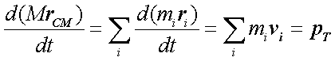

Physique
Maintenant que nous savons comment
fonctionne à sa base un moteur 3D, c’est-à-dire comment il fait
pour représenter des objets quelconques à l’écran, nous
allons passer dans le vif du sujet : la simulation de phénomènes
physiques. En clair : comment fonctionne une animation réaliste.
Vous en avez tous vu dans des jeux un tant soit peu évolués ou
dans des films d’animation : un monstre reçoit une balle dans l’épaule
et le choc lui fait perdre l’équilibre et sous l’effet de la gravité
tombe par terre en tournant sur lui-même.
Les Mathématiques ont une part importante dans les
bases d'une animation virtuelle mais il est aussi nécessaire d'aborder
différents phénomènes physiques afin de comprendre la totalité
de ces animations. C'est pourquoi nous allons reprendre les bases de la physique
( vitesse, accélération, position d'un objet ou bien encore d'un
personnage dans l'espace en fonction du temps...) au niveau de la première,
deuxième et troisième dimension.
On peut rendre le mouvement aussi complexe que
l’on souhaite en prenant en compte une infinité de paramètres.
Mais en ce qui nous concerne, on n’utilisera qu’un tout petit champ de la physique
appelé« dynamique », et de manière encore plus précise,
la dynamique des corps solides avec la cinématique. La cinématique
est l’étude de la position d’un corps dans l’espace en fonction du temps.
Elle ne se préoccupe pas des causes du mouvement mais seulement du mouvement
lui-même, contrairement à la dynamique qui, elle, s’occupe de l’étude
des forces et des masses qui permettent aux quantités « cinématiques »
d’évoluer.
Quelle distance parcourt une balle
de base ball en 10 secondes si elle a une vitesse de 50 km/h et se déplace
en ligne droite est un problème de cinématique. Quelle distance
elle parcourt dans le champ gravitationnel terrestre si je la lance est un problème
de dynamique.
1. Position, vitesse, accélération
1. Travail de dérivation
Cela peut paraître surprenant, mais on ne peut pas déplacer
un objet en le poussant. Le fait de le pousser n’affecte pas directement sa
position, ni même sa vitesse mais son accélération. Ces
quantités sont donc liées entre elles. Voici comment.
Nous allons utiliser des formules applicables dans un milieu à une
dimension. Le passage à la troisième n’est qu’une simple formalité
que nous aborderons après.
La dérivée de la position dans l’espace d’un point (1 dimension)
par rapport au temps nous permet de déterminer sa vitesse.
Si on dérive la vitesse par rapport au temps, on obtient l’accélération
du point.
Ce qui équivaut à :
On peut tout aussi bien faire l’inverse, an partant de l’accélération
pour déterminer la position de l’objet dans l’espace. On utilise pour
cela des primitives.
Admettons que nous voulions trouver le changement de position de notre objet
depuis que nous avons dessiné sa dernière position. Admettons
de plus que l’accélération de notre objet est constante et vaut,
disons, 5 mètres par seconde carrée. Nous utiliserons aussi
le temps écoulé depuis la dernière image pour intégrer
la variable t :
L’équation ci-dessus nous montre la vitesse en fonction du temps depuis
la dernière image. On découvre la constante d’intégration
C qui est en fait la vitesse de l’objet qu’on avait à l’image précédente.
Admettons que l’image précédente était celle de l’instant
t=0 et que la vitesse de l’objet était alors de 0 m/s. La formule devient
alors :
Maintenant on intègre l’équation obtenue pour obtenir la nouvelle
position de l’objet dans notre espace unidimensionnel.
On a ainsi obtenu notre position de l’objet pour la deuxième image.
On recommence ainsi 25 fois par seconde (voir plus vite) pour obtenir les
positions suivantes. Il va sans dire que les v(0) et les r(0) seront remplacés
par les vitesses et positions obtenues à l’image procédente,
sinon notre objet ne changera jamais de place. La variable t est bien sûr
le temps qui s’est écoulé depuis notre dernière image.
2. Que la force soit avec toi...
Maintenant qu’on sait comment obtenir la position d’un objet à partir
de son accélération, il faudrait savoir comment l’on obtient
cette dernière. Souvenez-vous : pousser un objet affecte seulement
son accélération. « Pousser » est ici un euphémisme
pour « appliquer une force ».
Les lois de Newton nous indiquent que la force est la dérivée
de la masse fois la vitesse. La masse multipliée par la vitesse est
appelée « le moment linéaire », noté p.
La masse m est une constante donc elle sort de la dérivée.
Ainsi, on obtient la célèbre équation F=ma. F est en
Newton, m en kilogrammes et a en m/s2.
La formule obtenue est parfaite pour un corps réduit à un seul
point. Le problème est que cela n’existe pas en pratique. En effet,
on travaille avec des objets volumineux comme des sphères, des cubes,
etc... constitués d’un très grand nombre de points. Il faut
donc d’autres méthodes.
D’abord, assimilons notre corps à un assemblage de points ayant chacun
une masse. On définit le moment total d’un corps PT comme la somme
de tous les moments linéaires de tous les points qui composent ce corps.
(Eq. 1)
m est la masse de chaque point et v sa vitesse.
On peut grandement simplifier l’analyse de la dynamique des corps rigides
en introduisant un point nommé « centre de masse » (CM).
Par définition, le centre de masse, ou centre de gravité, est
le barycentre de tous les points qui composent ce corps pondérés
par la masse totale du corps M.
(Eq. 2)
En utilisant cette définition du centre de masse, on peut simplifier
l’équation 1 en multipliant les deux côtés de l’équation
2 par M, puis en dérivant le tout.
 (Eq. 3)
Le côté droit de l’équation 3 est le moment total défini
par l’équation 1. Maintenant, regardez le côté gauche :
c’est la vitesse du centre de masse multiplié par la masse totale de
l’objet. Ainsi, on obtient :
(Eq. 4)
L’équation 4 dit que le moment linéaire total est égal
à la masse totale multipliée par la vitesse du centre de masse.
Cela veut dire qu’il n’y a plus besoin d’effectuer la somme de l’équation
1 pour trouver le moment tant qu’on connaît la masse totale de l’objet
ainsi que l’emplacement et la vitesse du centre de masse.
En pratique, cela signifie que pour un corps homogène, son centre
de masse est situé en son centre, par exemple au centre d’une sphère
à répartition sphérique de masse ou à l’intersection
des diagonales d’un cube. On peut donc assimiler tous les corps simples à
des points. Ainsi, on peut dire que toutes les forces qui agissent sur lui
agissent sur son centre de gravité. De même, on ne prendra en
compte pour le calcul de sa vitesse que l’accélération du centre
de gravité.
Là où cela devient plus subtil, c’est lorsqu’on veut simuler
la rotation du corps sur lui-même. A ce moment, il faut tenir compte
de l’endroit où est appliquée la force et ne pas se contenter
de la placer au centre de gravité. Ceci sera l’objet de la prochaine
section.
3. Application à la 3D
Toutes les formules que nous venons de voir restent les mêmes en 3D,
à la seule différence près qu’on travaille désormais
avec des vecteurs à trois dimensions (x, y et z). La dérivation
s’effectue de manière semblable (on dérive les trois coordonnées
par rapport à t) de même que l’utilisation des primitive :
les constantes qu’on ajoute deviennent simplement des vecteurs, et on ajoute
à chaque fois les trois coordonnées.
Mouvements angulaires
Les objets du monde réel ne subissent rarement que des translations
dans l’espace. Il leur arrive toujours de subir des rotations, comme pour une
balle qui roule sur le sol par exemple, ou alors une balle de tennis ou de ping
pong lancée par un sportif qui peut décrire toutes sortes d’effets
angulaires.
1. Angle, vitesse et accélération
angulaire
Il existe une relation très semblable entre ces trois paramètres
à celle que nous avons vu précédemment :

Oméga majuscule est l’angle de l’objet (en radians), oméga
minuscule est sa vitesse angulaire (rad/s) et alpha est son accélération
angulaire (rad/s2).
Le schéma suivant montre la signification de Ω.
Fig. 1

L’angle Ω s’obtient à partir de l’accélération
angulaire de la même façon que la position du centre de masse
à partir d’une accélération linéaire.
Remarque : il faut noter qu’en deux dimensions un vitesse ou
une accélération angulaire sont des nombres. Ce sont des vecteurs
quand on passe en trois dimensions. Le passage en 3D fera l’objet d’une autre
rubrique.
2. Vitesse d’un point de l’objet
La question est maintenant de savoir comment déterminer la vitesse
d’un pont quelconque à la surface d’un objet en tenant compte non plus
uniquement de la vitesse linéaire du contre de masse, mais également
de la vitesse angulaire de cet objet. Cela peut être intéressant
pour réagir à une collision, dont la force dépend de
la vitesse des deux points qui entrent en contact.
Fig. 2
La vitesse du point B est égale à ou
ω est la vitesse angulaire (rad/s) et rOB le rayon de l’objet – en mètres
(ici un cercle). Le résultat est la vitesse du point B en m/s.
On constate que le vecteur vitesse est tangent au cercle au point B. En fait
le vecteur vitesse angulaire est le vecteur rayon « perpendicularisé »
multiplié par la vitesse angulaire. Ainsi, on obtient :
.
La norme de ce vecteur est égale à  .
.
Ce que nous venons de calculer est la vitesse du point B dans le référentiel
lié au repère local de l’objet (O, xb, yb), tel qu’il est montré
dans la figure 1. Il s’agit maintenant de déterminer sa vitesse dans
le référentiel global (O, xw, yw).
Il suffit pour ce faire d’ajouter la vitesse du centre d’inertie de l’objet.
Ainsi, notre formule devient :
On peut éclaircir tout cela en prenant un exemple simple. Admettons
que le référentiel global (O, xw, yw) est une feuille et que
l’objet est une gomme. Il est aisé de comprendre que la vitesse de
la gomme dans le référentiel lié à son repère
local dépend uniquement de sa vitesse angulaire, tandis que si on considère
son mouvement par rapport à la feuille, il faut aussi prendre en compte
la vitesse de son centre de masse. Si on veut maintenant étudier le
tout par rapport au référentiel terrestre, il faut tenir compte
en plus de la vitesse de la feuille (on suppose dans l’exemple que la gomme
est posée sur la feuille et qu’elle tourne en restant en contact avec
cette feuille).
Comment déterminer les vitesses angulaires à partir des forces
exercées sur l’objet, tel est l’objet du prochain paragraphe.
Moment angulaire
Maintenant on peut travailler sur l’équivalent angulaire de
l’équation qui lie la force, la masse et l’accélération
linéaire.
On commence par définir le moment angulaire, LAB d’un point B autour
d’un point A, comme ceci :
Une particularité du moment angulaire est qu’il est mesuré à
partir d’un autre point, contrairement au moment angulaire.
Comme le montre cette équation, le moment angulaire est la norme du
produit vectoriel de la distance AB par le moment linéaire du point B
(masse * vitesse).
En voici la représentation schématique :
On constate une autre notation d’après ce schéma : le moment
angulaire est défini comme étant le produit scalaire du vecteur
par le vecteur moment
linéaire. Cela revient à dire que :
La dérivée du moment angulaire par rapport au temps nous donne
le moment de torsion, discuté dans la section suivante.
Moment de torsion
De la même manière qu’on a utilisé la dérivée
du moment linéaire pour définir la force, on va utiliser la dérivée
du moment angulaire pour introduire l’équivalent angulaire d’une force,
c’est-à-dire le moment de torsion, noté τ.
Ainsi, plus la force appliquée en un point de la surface d’un objet
est grande, plus le moment de torsion est grand. Il faut noter que pour le moment
nous travaillons en deux dimensions et que dans une telle configuration, le
produit vectoriel est un nombre donc le moment de torsion obtenu est lui-même
un nombre.
Cependant, nous n’avons toujours pas de relation entre le moment de torsion
et la vitesse angulaire. Nous ne pouvons donc toujours pas établir un
lien entre ces deux propriétés qui nous permettrai de mettre en
place un outil de simulation. Ce sera l’objet de la prochaine rubrique.
Moment angulaire total et inertie
Avant d’examiner la relation entre les quantités appartenant à
la dynamique et celles appartenant à la cinématique, on a besoin
de définir le moment angulaire total, comme on l’a fait pour le moment
linéaire total.
Le moment angulaire total autour d’un point A est défini comme suit :
Le moment angulaire total est donc la somme du moment angulaire de tous les
points que constituent l’objet, le tout autour du point A, qui le plus souvent
sont centre de masse.
Mais cette formule est inutilisable pour un corps homogène qui n’est
pas constitué de quelques points seulement. Cette formule peut être
simplifiée en introduisant une nouvelle quantité, le moment d’inertie,
de la même manière qu’on a introduit le centre de masse pour simplifier
les équations du mouvement linéaire.
Partant de l’équation précédente, on peut écrire
que :
Oméga sort de la somme car la vitesse angulaire est constante pour tous
les points.
Le produit vectoriel d’un vecteur par lui même mais « perpendicularisé »
équivaut à un produit scalaire normal (norme au carré).
Ainsi on obtient une nouvelle quantité, le moment d’inertie autour
du point A.
Pour comprendre ce qu’est le moment d’inertie, il faut l’imaginer comme la
quantité d’effort qu’il faut fournir pour tourner un corps autour d’un
point A. Plus le moment d’inertie de corps est grand, plus il faut une force
importante pour le faire tourner sur lui-même.
Ainsi, on tourne beaucoup plus vite sur soi-même lorsqu’on a les bras
resserrés que lorsqu’ils sont écartés, si on applique la
même force. Cela est logique puisque le moment d’inertie augmente avec
le rayon.
Vous n’avez qu’à observer des patineurs pour vous en convaincre.
Il ne nous reste maintenant plus qu’à déterminer l’accélération
angulaire. On sait que la dérivée du moment angulaire est le moment
de torsion et que la dérivée de la vitesse angulaire est l’accélération
angulaire, d’où la formule suivante :
Nous avons à présent tout ce qu’il faut pour simuler les translations
et les rotations des objets en fonction des forces qu’ils subissent.
Voici à titre indicatif le moment d’inertie de quelques objets usuels :
Passage à la 3D
Etant donné qu’en trois dimensions le produit vectoriel n’est plus
un nombre mais un vecteur, on obtient le résultat suivant :
On constate de plus que la vitesse et l’accélération angulaire
ne sont plus des nombres mais des vecteurs.
La direction de ces vecteurs et l’axe de rotation et leur norme est la quantité
de mouvement à proprement parler, en rad/s ou en rad/s2.
Se pose maintenant la question de savoir de quel angle il faut tourner l’objet
autour de ses axes x, y et z pour représenter le mouvement angulaire
dans le cadre du moteur 3D, c’est-à-dire comment obtenir à partir
de la direction et de la norme du vecteur vitesse les bons angles de rotation.
Voici donc la formule nécessaire :
Considérons une rotation r d’axe d’angle
θ qui transforme un point M en M’.
Le vecteur oméga doit unitaire tel que .
La transformation est la suivante :
On en déduit les composantes x’, y’ et z’ suivantes, le tout en factorisant
par x, y et z :
Cette factorisation nous permet de déduire la matrice de transformation
suivante :
On peut facilement constater que si le vecteur vitesse angulaire est nul,
toute la matrice est remplie de zéros sauf la diagonale, qui est remplie
de 1 à cause du cos θ et on obtient ainsi la matrice identité :
s’il n’y a pas de rotation, on obtient le point initial à l’issu de la
transformation.
Pour ajouter les angles de rotation d’image en image de telle façon
à ce qu’on aie l’impression que l’objet tourne continuellement, il suffit
de multiplier la matrice de rotation de l’image précédente par
celle qu’on a déterminé lors du calcul de l’image en cours.